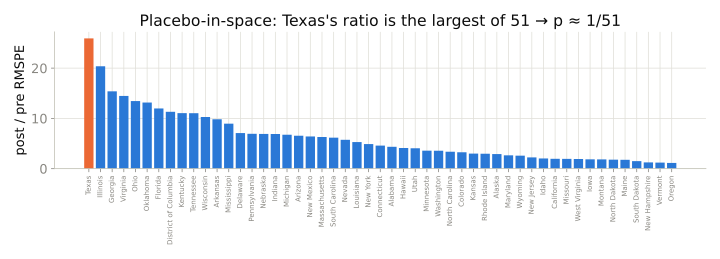
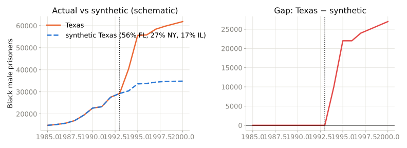

Session 9 · Mixtape chapters 10–11

Pretend each other state was treated, build its synthetic twin, and compute how much worse the fit got after 1993. Texas is the most extreme of 51 → rank-based \(p ≈ 0.02\).

Prison construction 1993–94. Synthetic Texas tracks real Texas before, then falls ≈ 23,000 Black male prisoners per year behind.
For each: estimand, design, assumption as a counterfactual sentence, first diagnostic.
The method follows the source of exogenous variation, never the reverse. If you cannot name where the variation comes from, the data cannot answer the causal question — and saying so is a result.
Mixtape Workshops · built on Cunningham, Causal Inference: The Mixtape